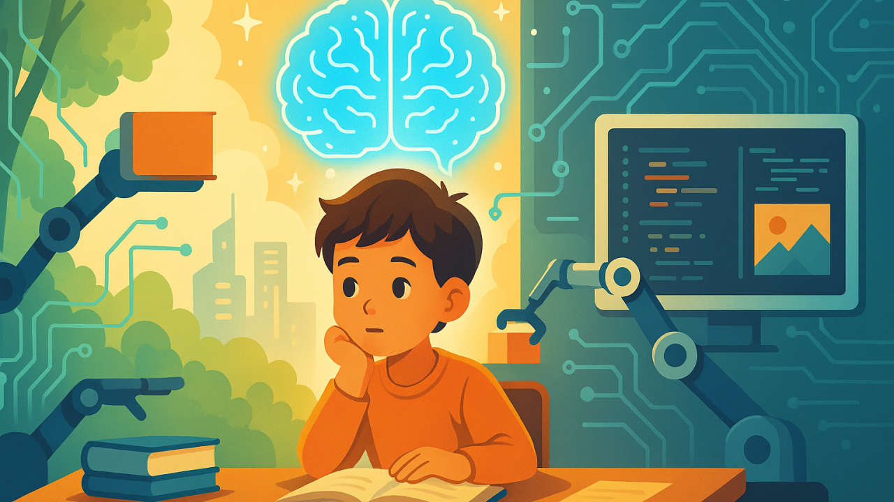
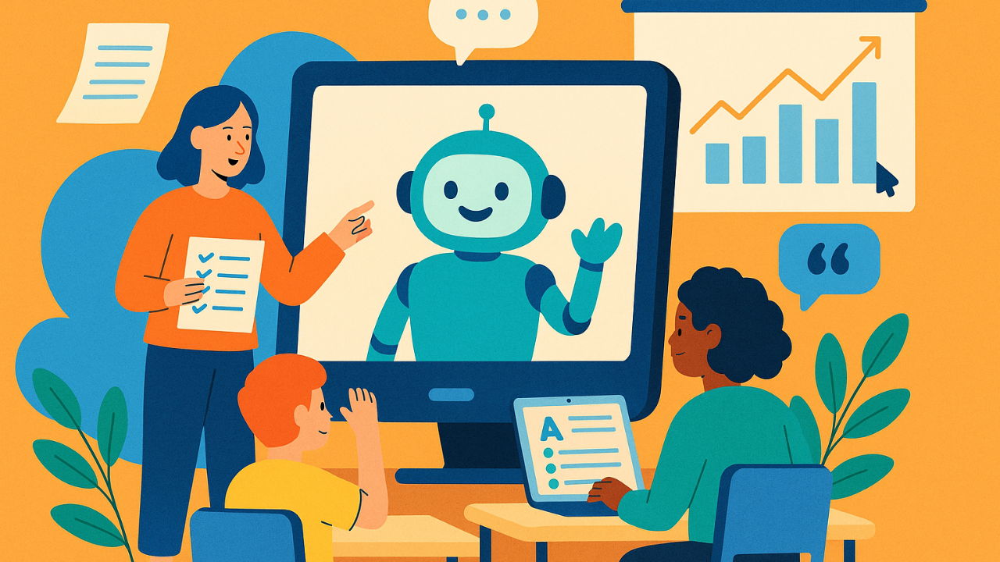
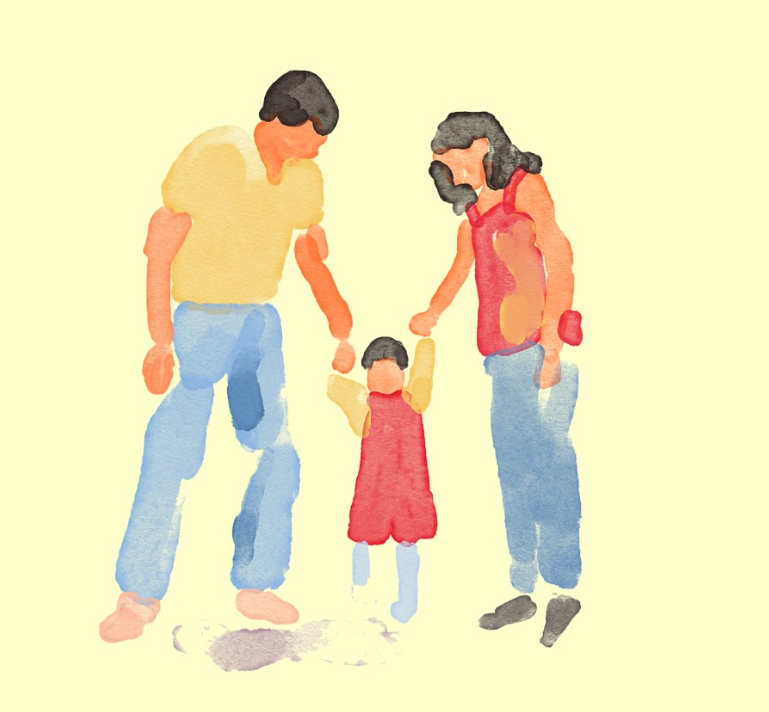

Episode Cards

Dr. Sean D. Young is a UC Irvine professor and Stanford-trained psychologist who researches how AI and digital technology shape behavior and learning. He has published over 150 scientific papers and authored a #1 Wall Street Journal bestselling book on behavior change. His work helps parents and educators make informed, practical decisions about technology and children.
Read Full Bio →Aiming to teach parents and educators how to confidently guide children through the age of AI by translating psychology and research into practical, everyday tools. Each episode delivers clear insights and real strategies to support healthy, responsible, and future-ready technology use.
Artificial intelligence is already part of students' everyday lives, but most parents and teachers haven't been given clear, practical guidance on how to talk about it, teach it, or use it responsibly. As a result, many families feel uncertain, overwhelmed, or even fearful about what AI means for their children's future.
Many parents and educators worry AI will replace skills, reduce critical thinking, or create unfair advantages, but few are shown how AI can actually support learning, creativity, and growth when used the right way. There is a growing gap between how quickly AI is advancing and how prepared families feel to guide children through it. What's missing isn't access, it's understanding, practical strategies, and age-appropriate direction.
That gap is exactly what the Young and Hungry Podcast was created to close.
Through the Young and Hungry Podcast we aim to help guide parents and educators on how to navigate the new age of A.I. with clarity and confidence.
Each episode is designed to translate complex AI concepts into simple, real-world strategies that support learning, creativity, and responsible use. The goal is not just awareness, it's action. We aim to equip adults to guide children in using AI thoughtfully, ethically, and productively as part of their everyday education and growth.
Listeners will walk away with practical tools and clear next steps, not just theory. Episodes focus on real applications and real conversations families can have today.
Through the podcast, you'll learn how to:
Each conversation connects psychology, behavior science, and modern technology to everyday parenting and teaching decisions.

Sean D. Young is a professor at the University of California, Irvine, with appointments in Emergency Medicine and Informatics & Computer Sciences. A trained psychologist and researcher, he studies how people build habits and use technology — including AI — in healthy, effective ways.
He holds a Ph.D. in Psychology from Stanford University and has published more than 150 scientific papers on technology, behavior, and digital health. He is also the author of Stick with It, a #1 Wall Street Journal and international bestselling book on lasting behavior change.
Dr. Young brings trusted, research-based guidance to parents and educators, turning complex science into practical strategies they can confidently use with students and children.
Learn more about Dr. Sean Young →